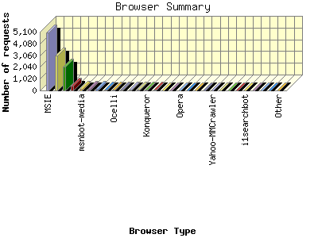
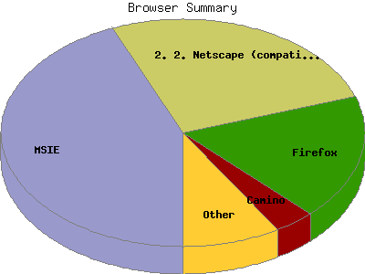

Report generated by Analog 6.0 and Report Magic 2.21
|
Web Server Statistics for "Harish Narayanan (hnarayan) - October 2006" Report generated by Analog 6.0 and Report Magic 2.21 |
The Browser Summary identifies the most popular web browsers used to visit
this site.
Browsers are broken down by recognized categories such as
Netscape Navigator/Communicator, Microsoft Internet Explorer, WebTV, Opera
and the like. Within each category is also a subgroup by version number
such as 'MSIE 5.0' or 'Netscape 4.5'.
This report shows all results. This report is sorted by number of requests.


| Browser Type | Number of requests | Number of bytes transferred | Percentage of the bytes | Percentage of the requests | |
|---|---|---|---|---|---|
| 1. | MSIE | 5,042 | 390.858 MB | 58.44% | 43.67% |
| MSIE/6 | 4,875 | 373.395 MB | 55.83% | 42.22% | |
| MSIE/7 | 145 | 15.023 MB | 2.25% | 1.26% | |
| MSIE/5 | 20 | 2.425 MB | 0.36% | 0.17% | |
| MSIE/4 | 2 | 14.969 KB | 0.00% | 0.02% | |
| 2. | Netscape (compatible) | 3,027 | 84.101 MB | 12.57% | 26.22% |
| 3. | Firefox | 2,050 | 77.680 MB | 11.61% | 17.75% |
| Firefox/1 | 1,991 | 76.833 MB | 11.49% | 17.24% | |
| Firefox/2 | 53 | 821.734 KB | 0.12% | 0.46% | |
| Firefox/0 | 6 | 44.906 KB | 0.01% | 0.05% | |
| 4. | Camino | 416 | 57.051 MB | 8.53% | 3.60% |
| Camino/1 | 416 | 57.051 MB | 8.53% | 3.60% | |
| 5. | msnbot-media | 157 | 6.475 MB | 0.97% | 1.36% |
| msnbot-media/1 | 157 | 6.475 MB | 0.97% | 1.36% | |
| 6. | Jigsaw | 135 | 295.409 KB | 0.04% | 1.17% |
| Jigsaw/2 | 135 | 295.409 KB | 0.04% | 1.17% | |
| 7. | Googlebot-Image | 134 | 18.188 MB | 2.72% | 1.16% |
| 8. | msnbot | 98 | 7.505 MB | 1.12% | 0.85% |
| msnbot/1 | 98 | 7.505 MB | 1.12% | 0.85% | |
| 9. | Ocelli | 72 | 5.355 MB | 0.80% | 0.62% |
| Ocelli/1 | 72 | 5.355 MB | 0.80% | 0.62% | |
| 10. | Jyxobot | 61 | 6.795 MB | 1.02% | 0.53% |
| Jyxobot/1 | 61 | 6.795 MB | 1.02% | 0.53% | |
| 11. | Mozilla | 58 | 1.638 MB | 0.24% | 0.50% |
| Mozilla/1 | 56 | 1.623 MB | 0.24% | 0.48% | |
| 12. | Galeon | 53 | 988.483 KB | 0.14% | 0.46% |
| Galeon/2 | 53 | 988.483 KB | 0.14% | 0.46% | |
| 13. | Konqueror | 36 | 1,008.086 KB | 0.15% | 0.31% |
| Konqueror/3 | 36 | 1,008.086 KB | 0.15% | 0.31% | |
| 14. | Netscape | 35 | 1.078 MB | 0.16% | 0.30% |
| Netscape/4 | 28 | 283.212 KB | 0.04% | 0.24% | |
| Netscape/7 | 7 | 820.536 KB | 0.12% | 0.06% | |
| 15. | e-SocietyRobot(http: | 31 | 356.188 KB | 0.05% | 0.27% |
| e-SocietyRobot(http://www | 31 | 356.188 KB | 0.05% | 0.27% | |
| 16. | Safari | 27 | 3.602 MB | 0.54% | 0.23% |
| Safari/419 | 20 | 1.422 MB | 0.21% | 0.17% | |
| Safari/312 | 4 | 1.243 MB | 0.19% | 0.04% | |
| 17. | Opera | 20 | 248.231 KB | 0.04% | 0.17% |
| Opera/9 | 14 | 104.781 KB | 0.01% | 0.12% | |
| Opera/8 | 6 | 143.450 KB | 0.02% | 0.05% | |
| 18. | FAST Enterprise Crawler 6 | 11 | 42.895 KB | 0.01% | 0.10% |
| FAST Enterprise Crawler 6 / | 11 | 42.895 KB | 0.01% | 0.10% | |
| 19. | ia_archiver | 11 | 2.729 MB | 0.41% | 0.10% |
| 20. | Exabot | 8 | 485.417 KB | 0.07% | 0.07% |
| Exabot/3 | 8 | 485.417 KB | 0.07% | 0.07% | |
| 21. | Yahoo-MMCrawler | 6 | 0.000 B | 0.00% | 0.05% |
| 22. | ilial | 6 | 14.289 KB | 0.00% | 0.05% |
| ilial/Nutch-0 | 6 | 14.289 KB | 0.00% | 0.05% | |
| 23. | envolk | 5 | 9.102 KB | 0.00% | 0.04% |
| envolk/1 | 5 | 9.102 KB | 0.00% | 0.04% | |
| 24. | PageBitesHyperBot | 4 | 26.949 KB | 0.00% | 0.04% |
| PageBitesHyperBot/600 | 4 | 26.949 KB | 0.00% | 0.04% | |
| 25. | i1searchbot | 4 | 14.016 KB | 0.00% | 0.04% |
| i1searchbot/2 | 4 | 14.016 KB | 0.00% | 0.04% | |
| 26. | Speedy Spider (Entireweb; Beta | 3 | 12.195 KB | 0.00% | 0.03% |
| Speedy Spider (Entireweb; Beta/1 | 3 | 12.195 KB | 0.00% | 0.03% | |
| 27. | MQBOT | 2 | 3.641 KB | 0.00% | 0.02% |
| MQBOT/Nutch-0 | 2 | 3.641 KB | 0.00% | 0.02% | |
| 28. | Zeusbot | 2 | 3.641 KB | 0.00% | 0.02% |
| Zeusbot/0 | 2 | 3.641 KB | 0.00% | 0.02% | |
| 29. | W3C_Validator | 2 | 24.764 KB | 0.00% | 0.02% |
| W3C_Validator/1 | 2 | 24.764 KB | 0.00% | 0.02% | |
| 30. | mozilla Java | 2 | 109.881 KB | 0.02% | 0.02% |
| 31. | NutchEC2Test | 2 | 3.641 KB | 0.00% | 0.02% |
| NutchEC2Test/Nutch-0 | 2 | 3.641 KB | 0.00% | 0.02% | |
| 32. | MJ12bot | 2 | 7.008 KB | 0.00% | 0.02% |
| MJ12bot/v1 | 2 | 7.008 KB | 0.00% | 0.02% | |
| 33. | Lynx | 2 | 21.330 KB | 0.00% | 0.02% |
| Lynx/2 | 2 | 21.330 KB | 0.00% | 0.02% | |
| 34. | MSRBOT (http: | 2 | 7.008 KB | 0.00% | 0.02% |
| MSRBOT (http://research | 2 | 7.008 KB | 0.00% | 0.02% | |
| 35. | nicebot | 1 | 13.982 KB | 0.00% | 0.01% |
| 36. | rbjhjlW3bphnorjneoWsfllnl3on | 1 | 8.633 KB | 0.00% | 0.01% |
| 37. | Wells Search II | 1 | 5.188 KB | 0.00% | 0.01% |
| 38. | 1 xopdiitrCeycrfCjb1cmssupvhsnn amo11 h | 1 | 8.633 KB | 0.00% | 0.01% |
| 39. | gnome-vfs | 1 | 10.665 KB | 0.00% | 0.01% |
| gnome-vfs/2 | 1 | 10.665 KB | 0.00% | 0.01% | |
| 40. | silk | 1 | 1.820 KB | 0.00% | 0.01% |
| silk/1 | 1 | 1.820 KB | 0.00% | 0.01% | |
| 41. | Wget | 1 | 16.038 KB | 0.00% | 0.01% |
| Wget/1 | 1 | 16.038 KB | 0.00% | 0.01% | |
| 42. | Python-urllib | 1 | 10.665 KB | 0.00% | 0.01% |
| Python-urllib/1 | 1 | 10.665 KB | 0.00% | 0.01% | |
| 43. | voyager | 1 | 1.820 KB | 0.00% | 0.01% |
| voyager/1 | 1 | 1.820 KB | 0.00% | 0.01% | |
| 44. | POE-Component-Client-HTTP | 1 | 16.038 KB | 0.00% | 0.01% |
| POE-Component-Client-HTTP/0 | 1 | 16.038 KB | 0.00% | 0.01% | |
| 45. | test | 1 | 1.820 KB | 0.00% | 0.01% |
| test/Nutch-0 | 1 | 1.820 KB | 0.00% | 0.01% | |
| 46. | nwnskqenhh hi urxqhlnmfmwbsnn8prmayt | 1 | 8.633 KB | 0.00% | 0.01% |
| 47. | Jakarta Commons-HttpClient | 1 | 16.038 KB | 0.00% | 0.01% |
| Jakarta Commons-HttpClient/3 | 1 | 16.038 KB | 0.00% | 0.01% | |
| 48. | uj5cfvucwcgjlju5ye5wlgyplwkhsKkuKhapsg | 1 | 8.633 KB | 0.00% | 0.01% |
| 49. | qedlwqkqlscf5sydyv5 fcRjlgacrirosyp | 1 | 8.633 KB | 0.00% | 0.01% |
| 50. | Shim-Crawler(Mozilla-compatible; http: | 1 | 1.820 KB | 0.00% | 0.01% |
| Shim-Crawler(Mozilla-compatible; http://www | 1 | 1.820 KB | 0.00% | 0.01% | |
| 51. | hwboah4tkhtw4odtyjytsdp | 1 | 8.633 KB | 0.00% | 0.01% |
| 52. | Windows-Media-Player | 1 | 2.036 MB | 0.30% | 0.01% |
| 53. | yftTbeifntsmdsqpqxidqnThsuneyuxfi | 1 | 8.633 KB | 0.00% | 0.01% |
| 54. | ISC Systems iRc Search 2.1 | 1 | 5.188 KB | 0.00% | 0.01% |
This report was generated on November 12, 2006 23:07.
Report time frame October 1, 2006 00:03 to October 31, 2006 23:56.
| Web statistics report produced by: | |
 Analog 6.0 Analog 6.0 |  Report Magic 2.21 Report Magic 2.21 |